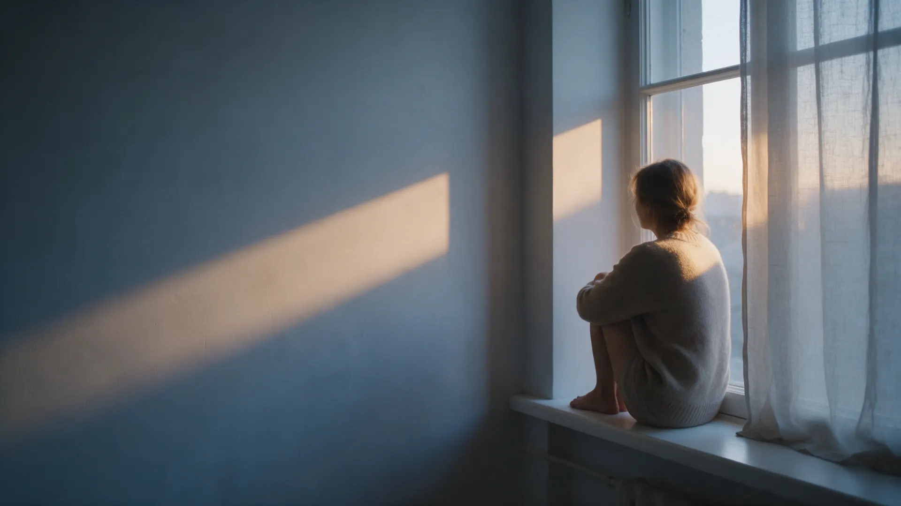
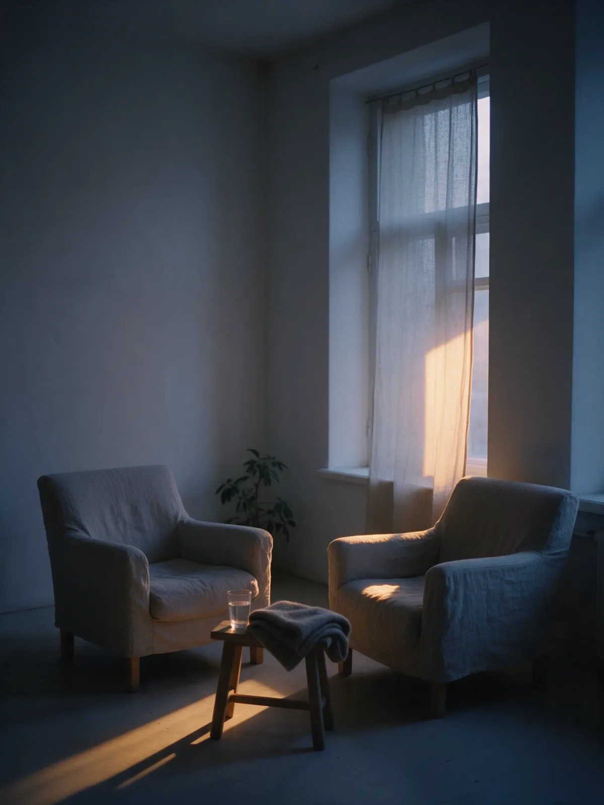
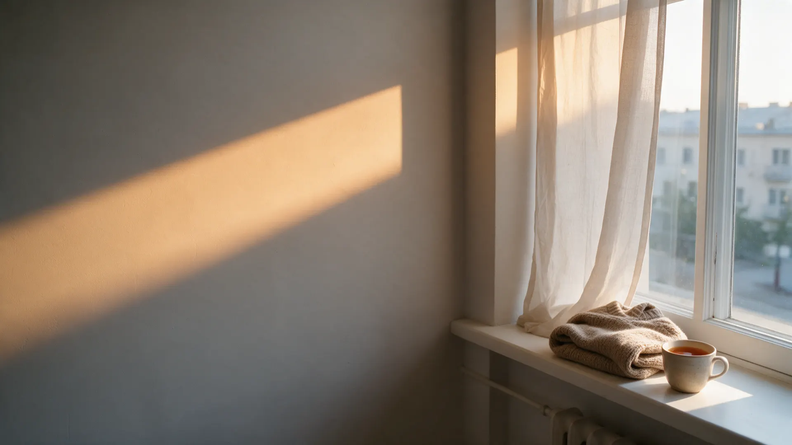

Консультация по отношениямОчно в {{город}} или онлайн
Разбираем ваш запрос: что повторяется, откуда это идёт и что можно сделать уже сейчас. {{длительность-консультации}}.
{{цена-консультация}} ₽

Екатерина Марусенко, {{город}} и онлайн
Находим, откуда берётся замкнутый круг в отношениях, проживаем его и учимся говорить так, чтобы слышали и слушали.
«Внутри я воин, а снаружи боюсь сказать»С этого часто начинается разговор. Если узнаёте себя, вы по адресу.
Со мной приходят, когда в отношениях одно и то же повторяется снова и снова.
Так выглядит круг, из которого кажется, что выхода нет. Два варианта, и оба больно.
Мы находим, что держит этот круг, проживаем это и отпускаем. Тогда появляется выбор, которого раньше не было.
Через психологию, энергопрактики и причинно-следственные связи событий. Смотрим не только на ссору, но и на то, что за ней стоит.
Находим, что на самом деле сидит внутри и каждый раз запускает один и тот же сценарий.
Даём этому место, без оценок и спешки, в вашем темпе.
Убираем то, что больше не нужно держать в себе.
Так, чтобы вас слышали и слушали: без молчания через силу и без ссор.
Цена известна до встречи. Формат выбираете вы.
Разбираем ваш запрос: что повторяется, откуда это идёт и что можно сделать уже сейчас. {{длительность-консультации}}.
{{цена-консультация}} ₽
Телесная практика: мягкие касания точек на голове, вы лежите одетым. {{длительность-access}}.
{{цена-access}} ₽
Не знаете, с чего начать? Напишите, и я подскажу, какой формат подойдёт.

Я помогаю вытащить то, что сидит в человеке и не даёт жить так, как хочется.
Меня зовут Екатерина Марусенко. Работаю с отношениями через психологию и энергопрактики. {{о-себе}}

Напишите, как вам удобнее: очно в {{город}} или онлайн. Отвечу и предложу время.